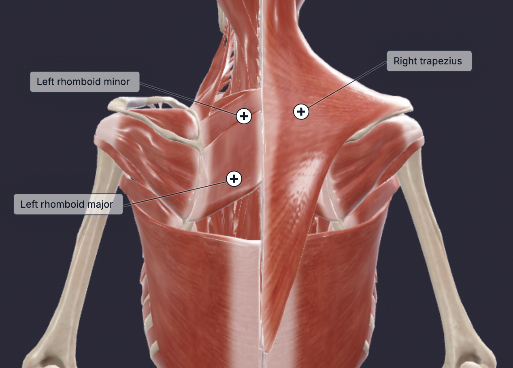

The trapezius is a broad, superficial muscle on the posterior neck and trunk, divided into three parts: descending (superior), ascending (inferior), and middle. It primarily supports posture by maintaining spinal alignment and coordinates scapular movements with several muscles. The rhomboids (major and minor) assist in scapular retraction and stabilization. The levator scapulae elevates and rotates the scapula, working with the upper trapezius to lift the shoulder and aid in downward rotation. The serratus anterior protracts and stabilizes the scapula against the rib cage, collaborating with the lower trapezius for upward scapular rotation during arm elevation. The latissimus dorsi partners with the lower trapezius in scapular downward rotation and facilitates shoulder adduction, extension, internal rotation, and movements such as pulling, rowing, and swimming. The upper fibres of the trapezius elevate the scapula and extend the neck. The middle fibres retract the scapula and the lower fibres depress the scapula.
The upper trap receives sufficient stimulus from heavy compound back exercises. Therefore any exercise where the scapula is being retracted will suffice.
Ensure your elbows are more flared for the rows. Anything with a chest support will be more stable. Notice I put shrugs in, incase you did want to do isolation work for the upper traps.
Pick one exercise from the list (excluding shrugs) and do 2-3 sets based on your preference.
